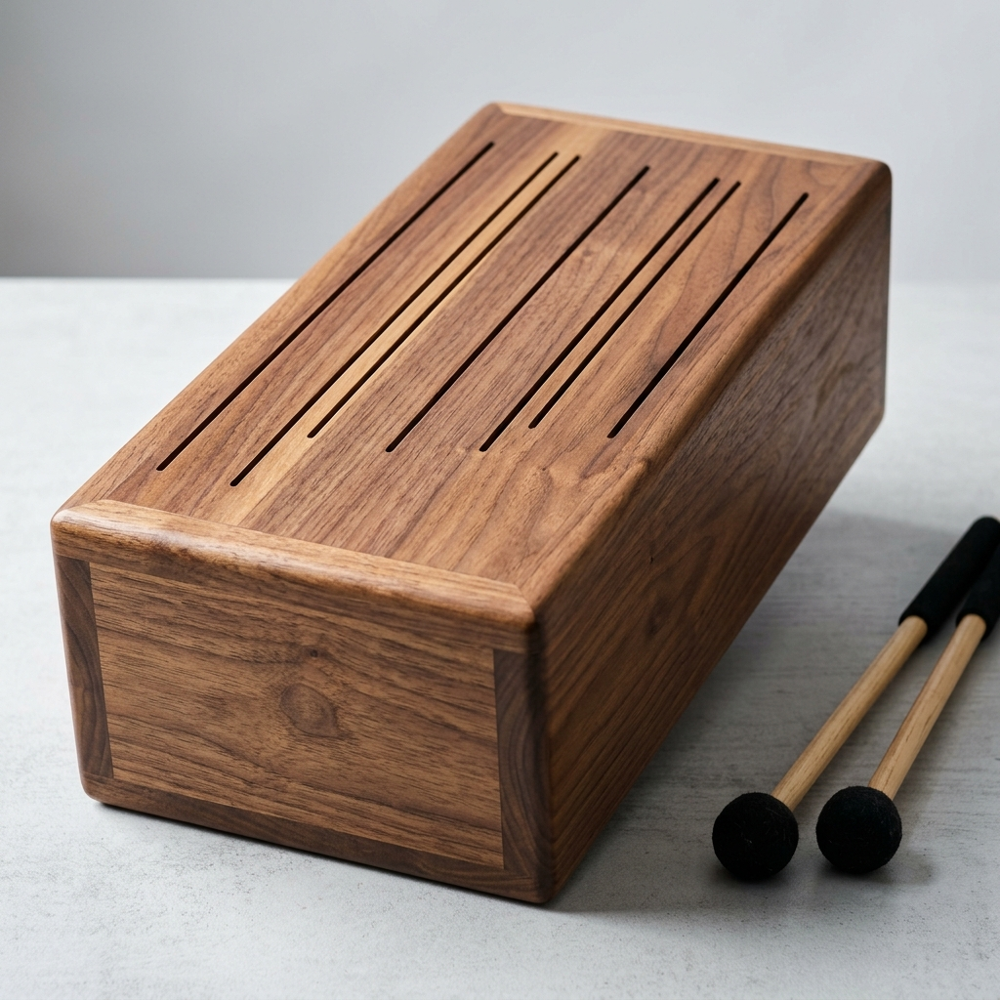

Concept Images


Status: L2 V5 build-packet candidate.
> *Three planned tongue drums — one to a published magazine plan, two original designs — and a design-of-experiments protocol for predicting each tongue's musical key from the geometry, material, and excitation.*
Interactive Wolfram model not yet published for this instrument. Deploy via wolfram-cloud-sync (CloudDeploy the model's Manipulate) to embed it here.
Concept renders pending. Prompt set in docs/image-gen-prompt.md; render into images/ (hero-render.png, macro/, etc.) via the image pipeline.
